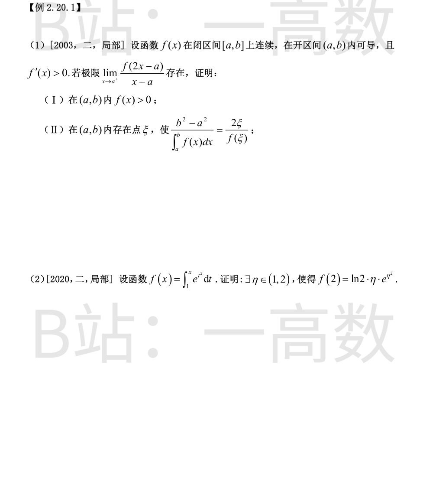
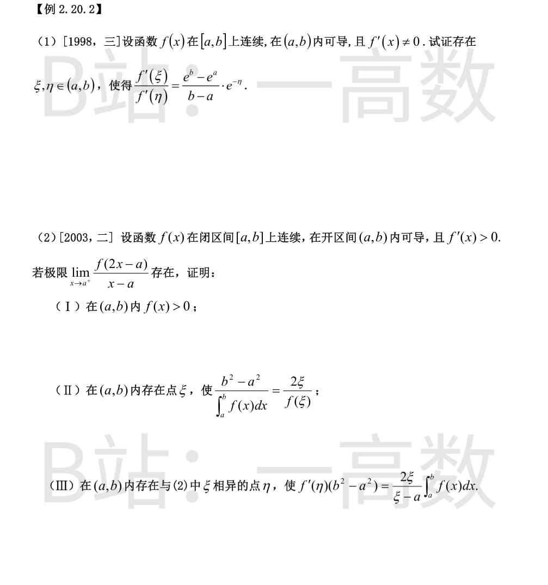

**（I）** 因 f 在 [a,b] 上连续，x→a⁺ 时 2x-a→a⁺，故 \lim_{x\to a^+}f(2x-a)=f(a)。若 f(a)\ne0，则分母 x-a→0⁺ 而分子趋于 f(a)\ne0，比值趋于 ∞，与极限存在（为有限值）矛盾，故 f(a)=0。
对任意 x\in(a,b)，在 [a,x] 上用拉格朗日中值定理：存在 \zeta\in(a,x) 使
$$f(x)-f(a)=f'(\zeta)(x-a)>0,$$
故 f(x)>f(a)=0，即 (a,b) 内 f(x)>0。
**（II）** 令 F(x)=\int_a^x f(t)\,dt，则 F 在 [a,b] 连续、(a,b) 内可导，F(a)=0，F'(x)=f(x)。对 F(x) 与 u(x)=x^2 在 [a,b] 上用柯西中值定理（对称形式 [F(b)-F(a)]u'(\xi)=[u(b)-u(a)]F'(\xi)）：存在 \xi\in(a,b) 使
$$\left(\int_a^b f(t)\,dt\right)\cdot 2\xi=(b^2-a^2)f(\xi).$$
由（I）知 f(\xi)>0，又 f>0 于 (a,b) 故 \int_a^b f(x)\,dx>0，两边同除以 f(\xi)\int_a^b f(x)\,dx 即得
$$\frac{b^2-a^2}{\int_a^b f(x)\,dx}=\frac{2\xi}{f(\xi)}.\qquad\blacksquare$$
f(1)=\int_1^1 e^{t^2}\,dt=0，f'(x)=e^{x^2}。对 f(x) 与 g(x)=\ln x 在 [1,2] 上用柯西中值定理（g'(x)=1/x\ne0 于 (1,2)）：存在 \eta\in(1,2) 使
$$\frac{f(2)-f(1)}{\ln 2-\ln 1}=\frac{f'(\eta)}{g'(\eta)}=\frac{e^{\eta^2}}{1/\eta}=\eta e^{\eta^2},$$
即
$$f(2)=\int_1^2 e^{t^2}\,dt=\ln 2\cdot\eta\cdot e^{\eta^2}.\qquad\blacksquare$$

对 f 在 [a,b] 上用拉格朗日中值定理：存在 \xi\in(a,b) 使
$$f'(\xi)=\frac{f(b)-f(a)}{b-a}.$$
对 f(x) 与 u(x)=e^x 在 [a,b] 上用柯西中值定理：存在 \eta\in(a,b) 使
$$\frac{f(b)-f(a)}{e^b-e^a}=\frac{f'(\eta)}{e^{\eta}},\qquad\text{即}\qquad f(b)-f(a)=(e^b-e^a)e^{-\eta}f'(\eta).$$
代入第一式得 f'(\xi)=\dfrac{e^b-e^a}{b-a}\,e^{-\eta}f'(\eta)。由条件 f'(x)\ne0，特别 f'(\eta)\ne0，两边除以 f'(\eta) 得
$$\frac{f'(\xi)}{f'(\eta)}=\frac{e^b-e^a}{b-a}\,e^{-\eta}.\qquad\blacksquare$$
**（I）** 由连续性 \lim_{x\to a^+}f(2x-a)=f(a)；若 f(a)\ne0，则 \dfrac{f(2x-a)}{x-a}\to\infty（分母 →0⁺），与极限存在矛盾，故 f(a)=0。对任意 x\in(a,b)，由拉格朗日中值定理存在 \zeta\in(a,x)：f(x)-f(a)=f'(\zeta)(x-a)>0，故 f(x)>0。
**（II）** 令 F(x)=\int_a^x f(t)\,dt（F(a)=0，F'=f），对 F(x) 与 u(x)=x^2 用柯西中值定理：存在 \xi\in(a,b) 使
$$\left(\int_a^b f(t)\,dt\right)2\xi=(b^2-a^2)f(\xi),$$
由（I）两边除以 f(\xi)\int_a^b f(x)\,dx 即得 \dfrac{b^2-a^2}{\int_a^b f(x)\,dx}=\dfrac{2\xi}{f(\xi)}。
**（III）** 由（I）f(a)=0；由（II）f(\xi)=\dfrac{2\xi}{b^2-a^2}\int_a^b f(x)\,dx。对 f 在 [a,\xi] 上用拉格朗日中值定理：存在 \eta\in(a,\xi)\subset(a,b)（显然 \eta\ne\xi）使
$$f(\xi)-f(a)=f'(\eta)(\xi-a).$$
代入 f(a)=0 与（II）的 f(\xi)：
$$f'(\eta)(\xi-a)=\frac{2\xi}{b^2-a^2}\int_a^b f(x)\,dx,$$
整理即得 f'(\eta)(b^2-a^2)=\dfrac{2\xi}{\xi-a}\int_a^b f(x)\,dx。\qquad\blacksquare